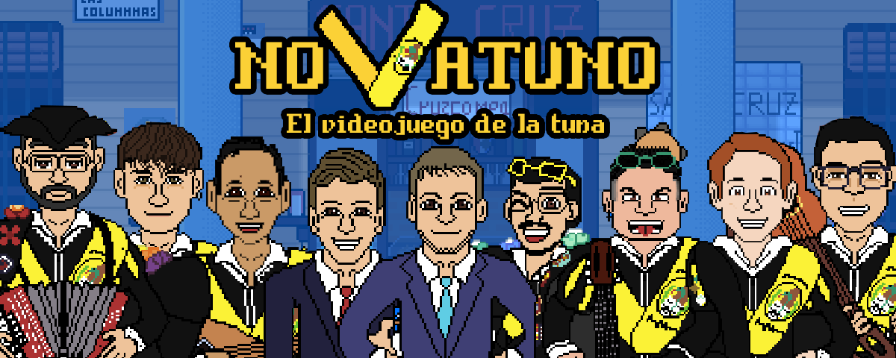

Novatuno is a Rhythm game based on spanish traditional "Tuna". The gameplay is similar to games like Guitar Hero and Friday Night Funkin, but adding a new mechanic called "Chord Change", meaning player has to play the note on time while being on the correct chord. The chord changes occur cyclically.
An special tool has been scripted to generate new levels using any single-instrument melody in .midi format. The game also features an online ranking which stores best 10 scores in a song.
Great part of the game design has been made based on different interviews and conversations with different members of the tuna community. Stories and locations are also based on real life ones. An early demo of the game with three different levels, published on itch, became very relevant amongst the "Tuna" community and several people are waiting for the future full version.
Platforms: Android, Windows.
Itch.io page: Novatuno Demo
Github: Repository. (If not visible, contact me at isabelarrans@gmail.com)
Main features:
Novatuno
Game Remarks
Novatuno is a Rhythm game based on spanish traditional "Tuna". The gameplay is similar to games like Guitar Hero and Friday Night Funkin, but adding a new mechanic called "Chord Change", meaning player has to play the note on time while being on the correct chord. The chord changes occur cyclically.
An special tool has been scripted to generate new levels using any single-instrument melody in .midi format. The game also features an online ranking which stores best 10 scores in a song.
Great part of the game design has been made based on different interviews and conversations with different members of the tuna community. Stories and locations are also based on real life ones. An early demo of the game with three different levels, published on itch, became very relevant amongst the "Tuna" community and several people are waiting for the future full version.
Main features and technologies
Game Engine: Unity, C# as main programming language.Platforms: Android, Windows.
Itch.io page: Novatuno Demo
Github: Repository. (If not visible, contact me at isabelarrans@gmail.com)
Main features:
- Basic rhythm behaviour: Functions to syncronize note spawns with music tracks and scoring, using a txt files with specific fields to store notes information and their timestamps.
- Level Creator tool: Tool that translates any .midi file into a .txt level and automatically assigns specific notes, based on note frequency. Levels can be edited later on changing geerated txt file. For reading the midis, an external library called DryWetMidi was used.
- Basic Online Ranking:API REST used to manage an online leaderboard that stores top 10 scores for each level and difficulty. External API used, called Dreamlo.
- Basic text narrative: Narrative prototype using text boxes. External plugin used called Ink.